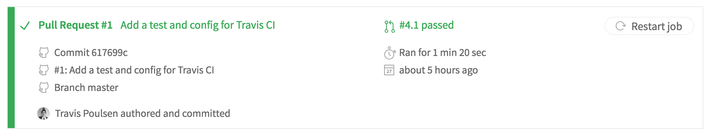

Elixir and CI
Travis Poulsen
2017-04-26
CI?
Continuous Integration
- To reduce risks of conflicts, code is merged often and built/tested by an automated system.
- Can be coupled with continuous deployment.
Why bother with CI?
Stop problems early
Some work up front, but you can catch bugs before they get into your master branch.
- Especially important when doing continuous deployment
Caveat
CI is only as good as your tests/build settings.
Automate and offload your testing
Long running processes can do their thing on the build server/service and not block you locally.

s/compiling/testing/g
CI as a service
The two major players
- Travis CI
- CircleCI
Similarities
- Both founded in 2011.
- Easily integrate with projects on GitHub
- Good documentation
- Configure with yaml
- Offer free builds for open source projects
- Containerized builds/Docker support*
Differences
Travis CI
- No private builds as part of their free plan
- OS X builds as part of free plan
- Easy build matrix config
- build against multiple compilers, OSes, etc
- Supports Elixir out of the box
CircleCI
- Free builds for private repositories
- Charges to build on OS X
- A little harder to configure for Elixir
- Supports Elixir with proper configuration file in v1
- Will have better Elixir support via Docker with v2.0
Which to choose?
Well…
why not both?
Need to build a private repo?
- CircleCI
Need to build for OS X?
- Travis CI
Set up
From square one
- Auth with GitHub or BitBucket (CircleCI only)
- Grant access to the repo you want to test
Configuration
At the most basic level
CircleCI
Tries to infer what type of project you're building and tries to run the common tests.
But…
Doesn't work for Elixir
Travis CI
Specify the language you're working in and it tries to run default installation and testing
.travis.yml
language: elixir
But…
Tries to use Elixir v1.0.4 by default.
So, clearly, more work to do
Travis CI, take 2
.travis.yml
language: elixir elixir: - 1.4 # your version here

CircleCI, take 2
No native support in CircleCI today.
Use a version manager (e.g. asdf) to install Erlang and Elixir.
Manually trigger the build by telling CircleCI what commands to run.
circle.yml
machine: environment: PATH: "$HOME/.asdf/bin:$HOME/.asdf/shims:$PATH" dependencies: cache_directories: - ~/.asdf pre: - if ! asdf | grep version; then git clone https://github.com/HashNuke/asdf.git ~/.asdf; fi - if ! asdf plugin-list | grep erlang; then asdf plugin-add erlang https://github.com/HashNuke/asdf-erlang.git; fi - if ! asdf plugin-list | grep elixir; then asdf plugin-add elixir https://github.com/HashNuke/asdf-elixir.git; fi - erlang_version=$(awk '/erlang/ { print $2 }' .tool-versions) && asdf install erlang ${erlang_version} - elixir_version=$(awk '/elixir/ { print $2 }' .tool-versions) && asdf install elixir ${elixir_version} - yes | mix deps.get - yes | mix local.rebar test: override: - mix test
erlang 19.2 elixir 1.4.1
circle.yml v.2
Works with the CircleCI 2.0 beta currently:
version: 2 jobs: build: working_directory: ~/ci_demo docker: - image: trenpixster/elixir:1.4.1 steps: - checkout - run: mix deps.get - run: mix test
References
- CI/CD image
- https://bluecanvas.io/continuous-integration-salesforce.html
- xkcd - compiling
- https://xkcd.com/303/
- CircleCI docs
- https://circleci.com/docs/1.0/
- Travis CI docs
- https://docs.travis-ci.com/